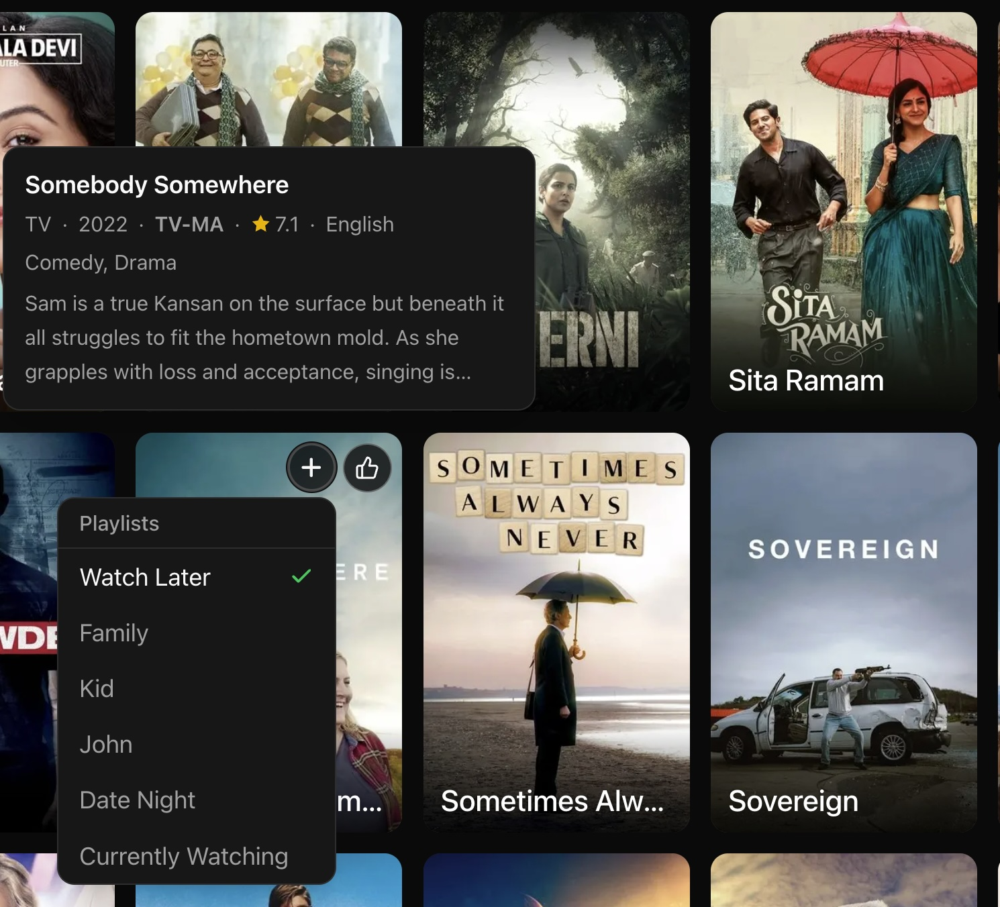
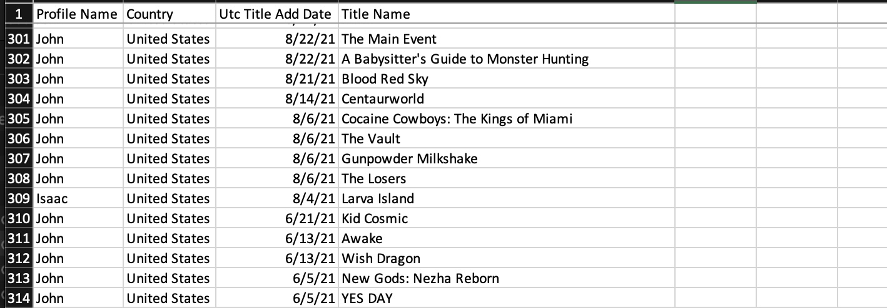
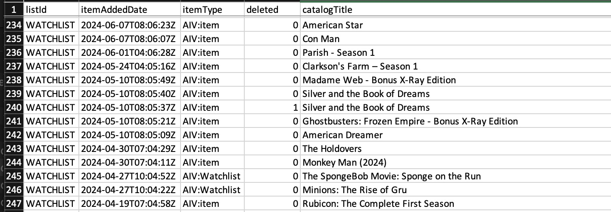

Crossing the streams
In my next example of using Claude Code to take back control of how I use services I’ll start with a problem. I sit down with my wife and kid and I want to watch a movie. Which movie? I go to Netflix it has suggestions and a list that I’ve been curating for a while. So I go to my watch list and start looking. But there is no way to sort this. So I scroll trying to remember what these movies are about. Then I go to Prime Video. Same thing. There is no way for me to get these services to talk to each other and they have control over everything. Even how what I want to see is sorted and displayed.
So what do I do? According to Claude, GDPR requires these services to allow me to download my personal data. So I do that for Netflix and Prime video. I tell Claude that I want to create a service that will combine my watchlists, merge in my watch history, and also my likes. I want the watchlists together so I can make some sense of them. I also want the other data because I want to combine all of it to generate recommendations. I give Claude the following prompt:
I want to create a web-based service called “The List” for discovering and oragnizing movies and television shows. I want to be able to organize them into playlists. I want to use my watch history and watch lists from amazon prime video, disney plus, and netflix as initial sources. I would like to be able to select a movie or TV show from the The List and have it link out to the streaming service where it is available.
It did the normal thing where it asked me questions, did some research, and built a plan. After refining the plan and approving it spent about 10 minutes or so and then sent me to a url.
The first draft was OK. It had a basic framework and hooks for things (like the import page). I wanted it to look more like a streaming services look. You know the look. A good default page with title listed in tiles, mouse overs, stuff like that. So I asked to to give me a suggests page where it just suggested popular stuff. Then I started refining the look of how it displayed titles: A aposter with the name of the title over it. A mouseover with details. Now here is where i can make it the way I wanted. Most of them kind of pop out the title and put the details where it covers the current row. I told it to put the mouse overdetails above or below it so I could see the current title and the rest of the row. I did this because I wanted to embed form objects in the title. Mainly my own personal rating and the ability to add/remove this title from watch lists. In the mouseover details I also told it exactly what I wanted. For example I had it add the primary language of the film. This is what it currently looks like:

Next I started importing things. Here’s something to think about: Both Netflix and Amazon provide data but they dont’ provide data in the same way. Netflix for example provides information for all users in the account. So I have my likes and my sons. But it has a field for the user so I can just import my own. As best I can tell Amazon has everything but it’s not separated by user. So if I watch something and my son watches something else both are in the “Watched” table, but I don’t have a way to distinguish things. Another thing to consider is title (movie and TV shows). They don’t give this information to you in a standardized format. Like there are databases of titles with unique keys… No you don’t get those. You get a title that I presume they use internally. Here are examples of watchlists from Netflix and Amazon Prime.


I’m pointing this out because when we merege the information in this dataset we need to combine it in a way that we can use public databases for movie and TV titles. This means we have figure out what these things are. Now I say “we” but really it’s Claude. Because claude comes up with a matching algorithm. But when it breaks we have to go back and forth with Claude to point out what is broken. This happened a lot when I was importing the Amazon data. The titles on the previously viewed lists were.. unique. For TV series it would have the format of:
Episode name-TV Series, Season N
So for the episode “End” from season 7 of the good wife it would look like this: “End-The Good Wife, Season 7” And of course there were variations of that. I would import the Amazon data, look at what was being generated, think: Ok this looks kind of off. I’d say: How did you get this Movie that I know should not be there. And it turns out it was matching the episode names (“End” in this example) to titles. Once we figured this out, it went pretty smoothly.
As an aside: In my day job I deal with clincal data so this wasn’t really that bad.
Now I have all of my watchlists, previously viewed titles, and my ratings all together. Now I can make some sense of my watchlists. I had both of the watchlists from Netflix and Amazon dumped into a default list. It’s pretty big (about 815 titles), so I told Claude I want to be able to filter and sort things. I can switch to only a TV or Moview view. Depending on who is watching I can pull filter based on content rating. I can also group the titles basedon genre:
Now when I find something I’m interested in I can view the details. I can construct this however I want. In this case I’ve retained the rating and list managment widgets. I also have a list of streaming sites with links to search for this title at those sites. So I can easily jump to streaming the title. If I’m looking for similar title, I had the service populate a bunch of options for me. I also had it go out and embed trailers for the title.
So that’s the lists and browsing. What about finding new things to watch? I can do that to some degree from the “More Like This” section in the title details. But I can also utilize the watchlists with the rest of the data to create a For You (well me really) feed.